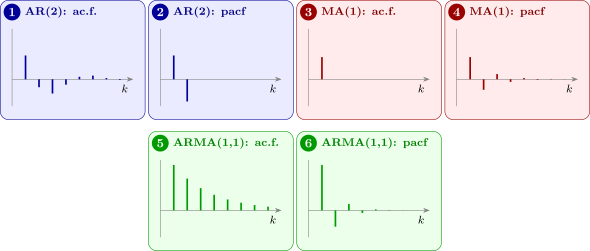

11.2 Identifying a model
The two functions cut off for opposite models, and this is what makes them usable together:
| Model | ac.f. | partial ac.f. |
| AR(\(p\)) | tails off | cuts off after lag \(p\) |
| MA(\(q\)) | cuts off after lag \(q\) | tails off |
| ARMA(\(p, q\)) | tails off | tails off |
Figure 9 shows typical patterns (“pacf” is the partial ac.f.).
The duality is not a coincidence. An AR(\(p\)) process is a finite regression on its own past, so beyond lag \(p\) there is no direct effect left to find and the partial ac.f. is zero. An MA(\(q\)) process is a finite sum of \(q + 1\) shocks, so beyond lag \(q\) two values share no shock at all and the ac.f. is zero. Each model is finite in one representation and infinite in the other, which is the invertibility discussion of Section 7 seen from the other side.

Sampling variation
In practice both functions are estimated from data, as \(r_k\) and \(\hat \phi _{kk}\) (the latter by solving the system of Theorem 11.1.2 with \(r_k\) in place of \(\rho (k)\)), and neither cuts off exactly. The usual rule is to treat a sample value as zero when it lies within \(\pm 2/\sqrt n\). The justification for white noise is as follows.
Proposition 11.2.1. If \(X_1, \dots , X_n\) are independent with mean \(0\), variance \(\sigma ^2\) and finite fourth moment, then for each fixed \(k \ge 1\), \(r_k\) is approximately \(N(0, 1/n)\) when \(n\) is large.
Derivation. For large \(n\), \(\bar x \approx 0\) and \(c_0 \approx \sigma ^2\), so \(r_k \approx c_k/\sigma ^2\) with \(c_k \approx \frac 1n\sum _{t=1}^{n-k}X_tX_{t+k}\). Each product \(X_tX_{t+k}\) has mean \(0\) and variance \(E(X_t^2)E(X_{t+k}^2) = \sigma ^4\), and two products \(X_tX_{t+k}\) and \(X_sX_{s+k}\) with \(s \ne t\) are uncorrelated: the expectation of their product contains some \(X\) appearing exactly once, whose mean is \(0\). So \(\Var (c_k) \approx (n - k)\sigma ^4/n^2 \approx \sigma ^4/n\), and \(\Var (r_k) \approx 1/n\). The sum is of many terms, each dependent only on its neighbours, and a central limit theorem for such sums gives approximate normality. □
For a process that is not white noise the variance is larger. If the process is MA(\(q\)), then for \(k > q\) Bartlett’s approximation gives \(\Var (r_k) \approx \frac 1n\bigl (1 + 2\sum _{i=1}^q\rho (i)^2\bigr )\), so the band for testing whether the ac.f. has cut off should be widened accordingly. For an AR(\(p\)) process, the sample partial autocorrelations beyond lag \(p\) are approximately \(N(0, 1/n)\), so the plain band \(\pm 2/\sqrt n\) applies to them. With \(n = 100\) that band is about \(\pm 0.2\), which is wide: identification is a judgement, not a calculation, and the reason the Box–Jenkins approach insists on checking the fitted model afterwards.
Remark. When both functions tail off, the process is ARMA and the orders cannot be read off directly. The practical route is then to fit several candidate models and compare them by an information criterion, penalising parameters: \[ \text {AIC} = -2\log L + 2r , \qquad \text {BIC} = -2\log L + r\log n , \] where \(r\) is the number of estimated parameters. BIC penalises more heavily and tends to choose the smaller model, which for forecasting is usually the safer error to make.
Example 11.2.2. A stationary series of \(n = 150\) observations, with mean removed, gave these sample autocorrelations and partial autocorrelations:
| \(k\) | \(r_k\) | \(\hat \phi _{kk}\) |
| 1 | 0.394 | 0.394 |
| 2 | \(-0.183\) | \(-0.400\) |
| 3 | \(-0.182\) | 0.108 |
| 4 | \(-0.026\) | \(-0.063\) |
| 5 | 0.040 | 0.026 |
| 6 | \(-0.013\) | \(-0.066\) |
| 7 | \(-0.109\) | \(-0.084\) |
| 8 | \(-0.106\) | \(-0.031\) |
Identify a model and give rough estimates of its parameters.
Solution. The band is \(\pm 2/\sqrt {150} = \pm 0.163\). The partial autocorrelations at lags \(1\) and \(2\) (\(0.394\) and \(-0.400\)) lie well outside it, and all those from lag \(3\) on lie inside: the partial ac.f. cuts off after lag \(2\). The ac.f. does not cut off: \(r_2\) and \(r_3\) are just outside the band, and the coefficients change sign and die away, the damped oscillation of an AR(2) with complex roots (Figure 9, panel 1). So an AR(2) model is indicated.
Rough estimates follow from the Yule–Walker equations with \(r_1\), \(r_2\) in place of \(\rho (1)\), \(\rho (2)\) (Problem 8.4.4): \begin {align*} \hat \alpha _1 &= \frac {r_1(1 - r_2)}{1 - r_1^2} = \frac {0.394(1.183)}{1 - 0.155} = \frac {0.4661}{0.8448} = 0.552 , \\ \hat \alpha _2 &= \frac {r_2 - r_1^2}{1 - r_1^2} = \frac {-0.183 - 0.155}{0.8448} = -0.400 . \end {align*}
As Theorem 11.1.4 predicts, \(\hat \alpha _2\) equals \(\hat \phi _{22}\). The point \((0.552, -0.400)\) lies inside the stationarity triangle, below the parabola \(\alpha _1^2 + 4\alpha _2 = 0\), so the fitted model has complex roots, consistent with the oscillating correlogram. (The series was in fact simulated from \(\alpha _1 = 0.6\), \(\alpha _2 = -0.4\).) The next step is to estimate the parameters properly and check the fit (Section 12).
Questions on this section
Stuck on something here? Ask below and it stays attached to this topic.